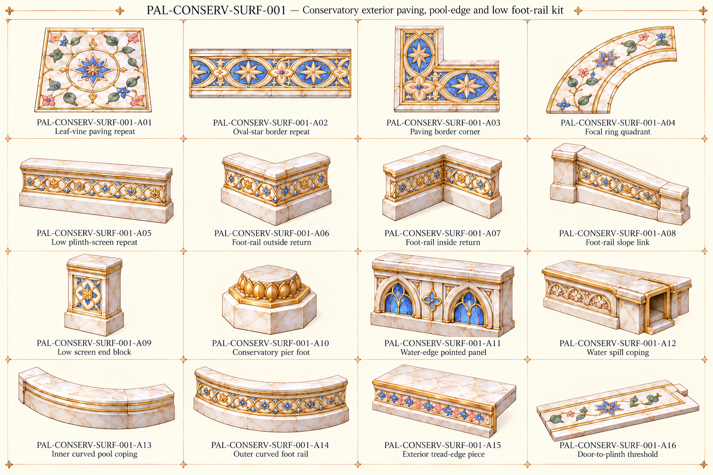

Original source vocabulary

Original palace component references. No accepted models or verified seamless textures/joins.
All active families · Part IDs · Repeat profiles and source/proposed roles

Returned to original palace scope. Provisional B25 label preserved as an alias, not a new map building.
Low foot-screen changed to source linked diamond/oval/star pattern, distinct from tall water-edge panels. Cropped column fragments removed.
Actual foot-screen height, annular inlay radii and water outlet geometry remain proposed.